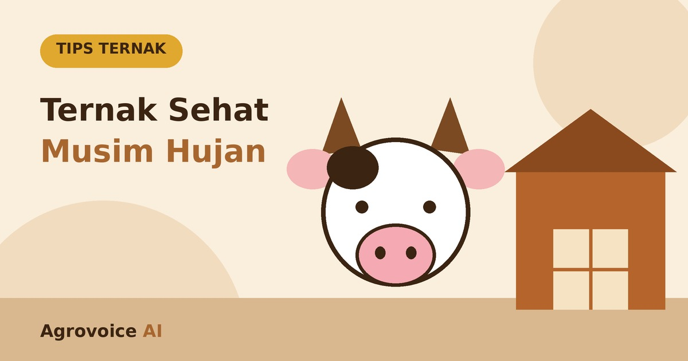

Panduan Pengendalian Hama Wereng Batang Cokelat secara Terpadu
Langkah antisipasi dan strategi pencegahan dini serangan wereng cokelat pada tanaman padi menggunakan metode PHT dan pemanfaatan musuh alami.

Wereng Batang Cokelat (Nilaparvata lugens) merupakan salah satu organisme pengganggu tanaman (OPT) paling berbahaya bagi budidaya padi sawah. Serangan yang parah dapat menyebabkan tanaman menguning, mengering, dan mati mendadak seperti terbakar (kondisi yang lazim dikenal petani sebagai hopperburn).
1. Gejala Awal Serangan di Lapangan
Gejala awal sering kali tidak disadari karena nimfa dan imago wereng berada di bagian pangkal rumpun padi dekat permukaan air. Beberapa tanda yang harus diwaspadai penyuluh dan petani antara lain:
- Daun bawah mulai menguning secara bertahap dari ujung ke pangkal.
- Batang padi di bagian pangkal dipenuhi bercak hitam akibat cairan embun madu yang ditumbuhi jamur jelaga.
- Rumpun padi tampak kerdil dan anakannya tidak berkembang normal.
2. Strategi Pengendalian Hama Terpadu (PHT)
Pendekatan PHT menitikberatkan pada keseimbangan ekosistem sawah, bukan sekadar penyemprotan insektisida kimia yang membabi buta. Langkah-langkah utama meliputi:
- Penanaman varietas tahan: Gunakan benih varietas unggul seperti Inpari 32, Inpari 42, atau varietas lokal berdaya adaptasi tinggi.
- Pengaturan pola dan jarak tanam: Terapkan sistem jajar legowo (misalnya 2:1 atau 4:1) untuk membuka ventilasi udara dan memudahkan penetrasi sinar matahari ke pangkal rumpun.
- Irigasi berselang (intermittent): Jangan menggenangi sawah terus-menerus. Keringkan sawah secara berkala selama 3–5 hari untuk menekan kelembapan mikro yang disukai wereng.
- Konservasi musuh alami: Jaga populasi laba-laba pemburu (Lycosa pseudoannulata), kumbang Paederus fuscipes (tomcat), dan kepik mirid yang efektif memangsa nimfa wereng.
3. Pencatatan Lapangan dengan Agrovoice
Melalui aplikasi Agrovoice, petugas penyuluh dan petani dapat langsung merekam temuan kepadatan populasi wereng saat pengamatan mingguan cukup dengan berbicara dalam bahasa daerah maupun bahasa Indonesia. Rekaman otomatis ditranskripsikan lengkap dengan foto rumpun, titik GPS petak sawah, dan rekomendasi SOP tindakan penanganan yang langsung diverifikasi koordinator penyuluh.